정보통신공사 기사 1명이 하루에 여러 현장을 차례로 도는 업무에서, 현장 상태를 모아 다음 현장 지연 위험을 계산하고 본사 관리자에게 먼저 할 일과 그 근거를 보여 주는 시스템입니다.
다음 현장 지연 위험 계산막힘 조기 확인안전점검 3단계조치 후 재계산
이 문서가 답하는 보완 요청
이 회사가 무엇을 만들었나 — 2~3쪽
왜 필요한가 (현장 문제) — 3쪽
무엇이 다른가 (핵심 기술 · 비교) — 4~7쪽
실제로 구현됐나 · 특허와 연결되나 · 앞으로는 — 8~10쪽
신청기술복수 현장 업무 위험관리 AX 시스템
관련 특허출원 10-2026-0173957(2026-09-11 출원 · 등록 전)
기준 프로그램v0.6.1 · c74484cGitHub 저장소 커밋
작성일2026-11-23
H
(주)하나정보통신복수 현장 업무 위험관리 AX 시스템
보완자료 01핵심 요약
① 무엇을 만들었나
흩어진 현장 상황을 모아 지금 먼저 할 일을 계산합니다
기사는 휴대폰 버튼 몇 번으로 현장 상태를 남기고, 프로그램은 정해진 계산 규칙으로 위험을 판단해 본사 관리자에게 순서와 근거를 보여 줍니다. 관리자가 조치하면 바로 다시 계산합니다.
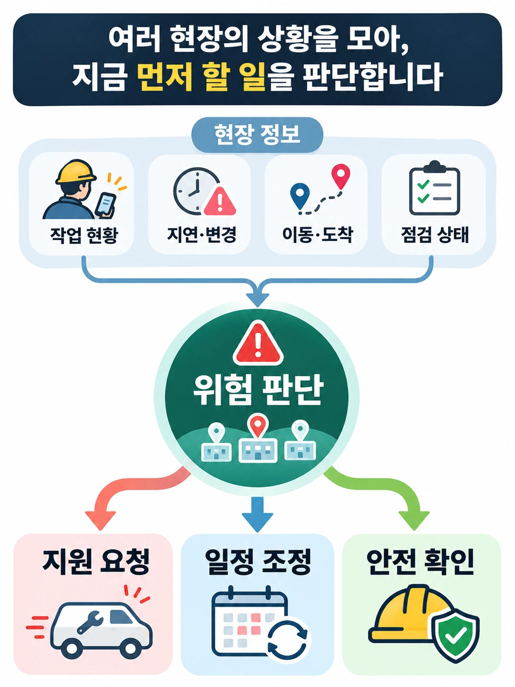
개념 그림회사 개념 그림 — 현장 정보 4가지를 모아 위험을 판단하고, 지원 요청 · 일정 조정 · 안전 확인으로 이어집니다.
① 기사 휴대폰에서 받는 것
작업 시작 · 종료 (버튼 한 번)
바뀐 예상 종료 시각 (+30분 · +1시간 …)
현장 문제 · 필요한 지원 · 사진
작업 전 · 중 · 후 안전점검과 착용 사진
② 프로그램이 계산하는 것 (규칙 3가지)
조기 확인 — 연락 없이 늦어지는 현장
연쇄위험 — 다음 현장 도착이 몇 분 늦는지
대응 우선순위 — 무엇부터 볼지, 왜 그런지
③ 본사 관리자에게 달라지는 것
안전 미흡 · 막힌 현장을 맨 앞에서 봄
다음 현장 지연을 일이 터지기 전에 봄
조치 뒤 다시 계산해 위험이 풀렸는지 확인
모든 판단이 입력 · 규칙 버전과 함께 남음
AI 예측이 아니라 정해진 계산 규칙입니다. 같은 입력이면 언제나 같은 결과가 나오고, 계산 과정이 화면에 그대로 보입니다.규칙 버전 chain-risk/1.1.0 · state-deviation/1.0.0 · response-priority/1.0.0 · 조기 확인 규칙 0.1
H
(주)하나정보통신복수 현장 업무 위험관리 AX 시스템
보완자료 01핵심 요약
② 왜 필요한가
정보통신공사 현장의 위험은 지연 · 누락 · 충돌로 나타납니다
하나정보통신 구본석 이사 인터뷰(2026-11-13)에서 확인한 현장 사실입니다. 업계 통계와 법령 근거는 03 현장 문제 정의에 출처와 함께 정리했습니다.
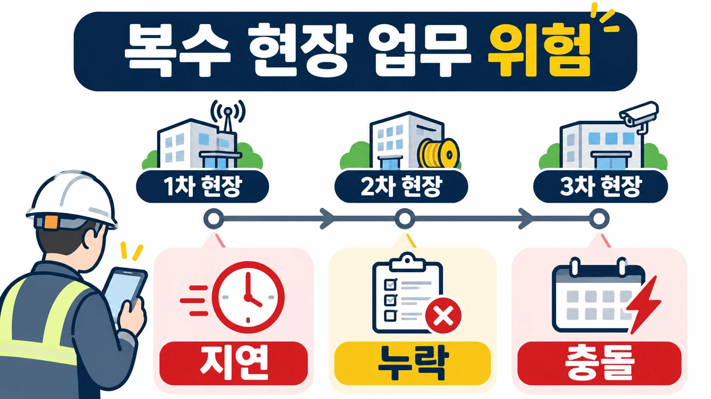
개념 그림회사 개념 그림 — 기사 1명이 1차 · 2차 · 3차 현장을 차례로 돌 때 생기는 세 가지 위험
AI 연출 사진
문제 1 · 막혀도 늦게 알림
기사가 혼자 해결하려다 본사 지원 요청이 늦어집니다. “일찍 알렸다면 본사가 더 빨리 지원할 수 있었다.”
AI 연출 사진
문제 2 · 안전 확인 누락
작업 전 · 중 · 후 안전장구 착용을 확인해야 합니다. “하나라도 빠지면 문제.” 다치면 산재, 원청 평가에도 영향을 줍니다.
AI 연출 사진
문제 3 · 다음 현장까지 번짐
한 현장의 지연으로 다음 현장을 계획한 날 방문하지 못한 사례가 있었습니다. 늦어지는 시간을 미리 알 방법이 없었습니다.
H
(주)하나정보통신복수 현장 업무 위험관리 AX 시스템
보완자료 01핵심 요약
③ 핵심 기술
한 현장이 늦어지면 다음 현장이 몇 분 늦는지 바로 계산합니다
기사가 ‘1시간 더 걸린다’고 보고하는 순간, 프로그램이 이동시간을 더해 다음 현장 · 그다음 현장의 도착 시각을 다시 계산합니다.
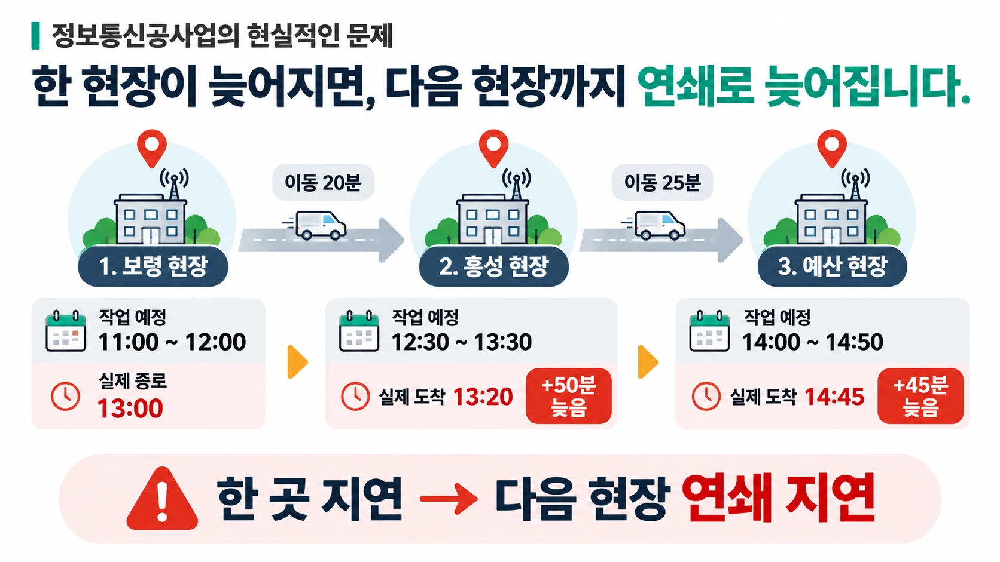
계산 예시계산 예시 (시험용 가상 일정) — 그림의 숫자는 실제 프로그램이 계산한 결과와 같습니다. 보령 11:00~12:00 → 이동 20분 → 홍성 12:30 시작 → 이동 25분 → 예산 14:00 시작
계산 규칙 (연쇄위험 chain-risk/1.1.0)
예상 도착 = 앞 현장 예상 종료 + 이동시간 13:00 + 20분 = 13:20
여유 = 다음 현장 예정 시작 − 예상 도착 12:30 − 13:20 = −50분 → 50분 부족 · 매우 높음
이어서 홍성이 13:20에 시작하면 14:20에 끝남 → +25분 → 예산 14:45 도착 → 45분 부족
실제 화면관리자 PC11:30
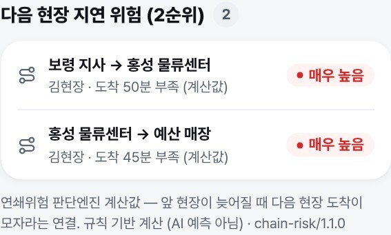
12
관리자 대시보드 — ① 새 보고가 들어온 현장 ② 다음 현장 지연 위험(계산값)
H
(주)하나정보통신복수 현장 업무 위험관리 AX 시스템
보완자료 01핵심 요약
④ 조치하면 다시 계산
관리자가 일정을 고치면 즉시 다시 계산해 위험이 풀렸는지 보여 줍니다
프로그램은 일정을 스스로 바꾸지 않습니다. 관리자가 정한 값을 받아 같은 규칙으로 다시 계산하고, 판단 전과 후를 함께 남깁니다.
실제 화면관리자 PC11:30
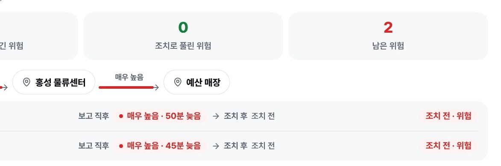
123
보고 직후 — ① 보령 예상 종료 13:00 ② 홍성 50분 부족 ③ 예산 45분 부족 (사건 상세 · 연쇄 영향 그림)
실제 화면관리자 PC11:30
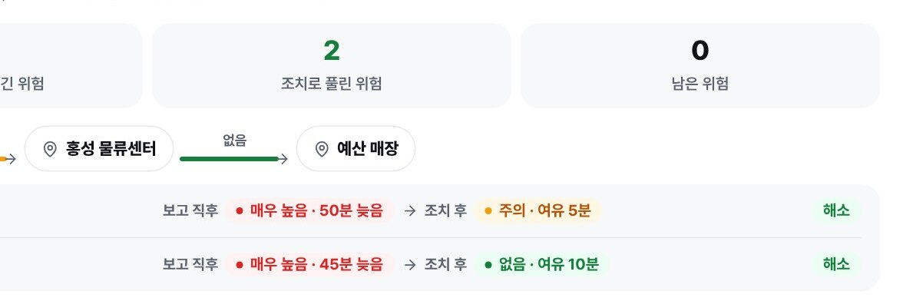
123
2차 조치 후 — 홍성 · 예산 시작을 관리자가 늦추자 같은 그림이 ‘남은 위험 0’으로 바뀜
11:30
예상 종료 보고
기사: ‘1시간 더’ → 13:00
›
자동
연쇄 계산
위험 연결 0 → 2 (50분 · 45분 부족)
›
1차 조치
홍성 시작 13:25
여유 5분(주의) · 예산 50분 부족 남음
›
2차 조치
예산 시작 15:00
여유 10분 → 위험 0
H
(주)하나정보통신복수 현장 업무 위험관리 AX 시스템
보완자료 01핵심 요약
⑤ 문제 1 · 2도 같은 흐름
연락 없는 현장은 휴대폰이 먼저 묻고, 안전점검 없이는 바로 시작되지 않습니다
문제 1막힘 조기 확인 — 시작 30분째 진행 보고가 없으면
실제 화면기사 휴대폰11:30
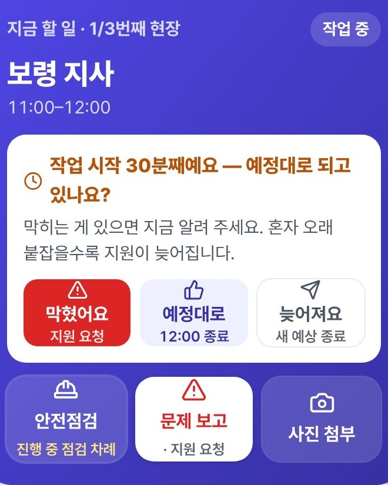
12
휴대폰이 먼저 묻는다: ‘예정대로 되고 있나요?’
실제 화면관리자 PC11:30
1
본사 대시보드 맨 앞에 ‘연락 없이 늦어지는 현장’
실제 화면기사 휴대폰11:30
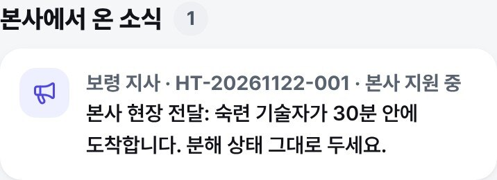
1
본사 지원 결정이 기사 휴대폰에 도착
문제 2안전점검 3단계 — 작업 시작 전 · 진행 중 · 마친 뒤
실제 화면기사 휴대폰10:56
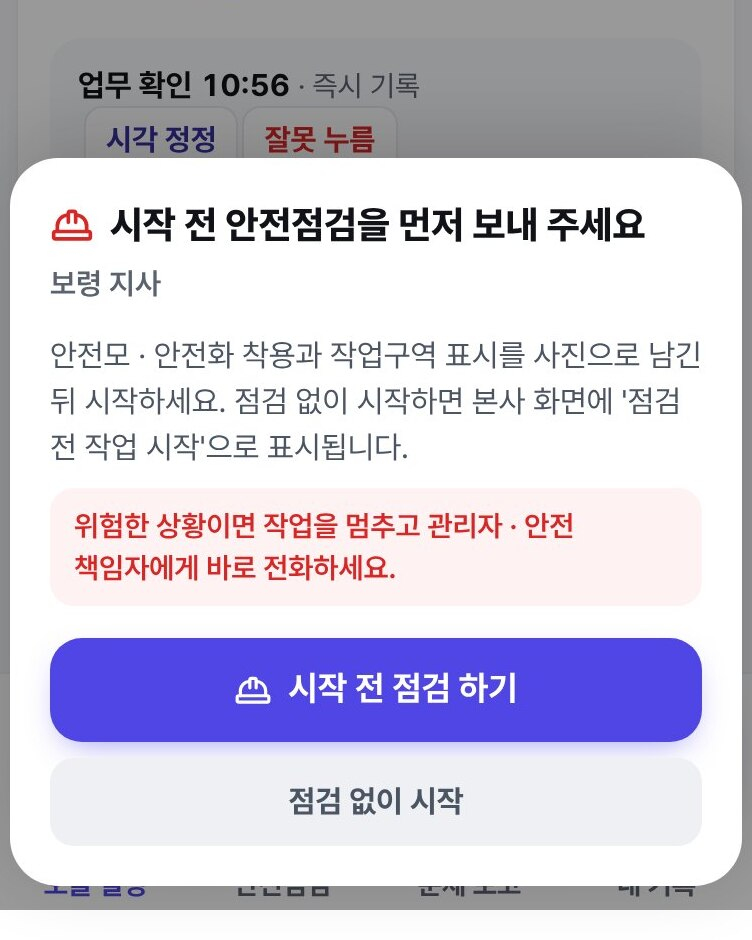
12
점검 없이 ‘작업 시작’을 누르면 먼저 묻는다
실제 화면관리자 PC11:30
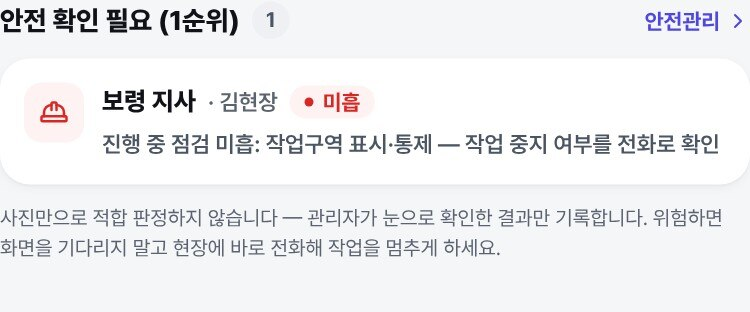
1
‘미흡’ 점검은 본사 대시보드 1순위로
실제 화면기사 휴대폰11:30
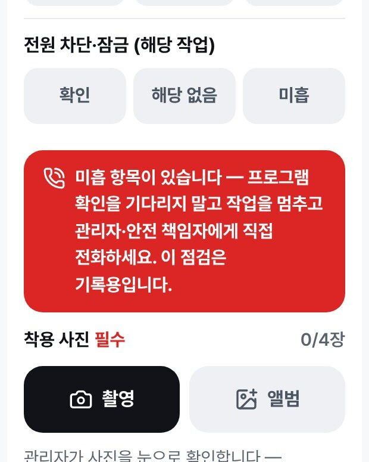
1
‘미흡’이면 작업 중지 · 직접 전화 안내
H
(주)하나정보통신복수 현장 업무 위험관리 AX 시스템
보완자료 01핵심 요약
⑥ 무엇이 다른가
일정표는 겹침만 보지만, 이 시스템은 늦어진 뒤의 도착을 계산합니다
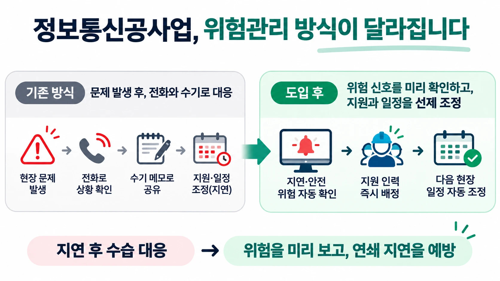
다음 현장 일정 조정 후 재계산개념 그림회사 개념 그림 — 오른쪽 ‘다음 현장 일정 조정’은 관리자가 정하고, 프로그램은 바뀐 일정으로 위험을 다시 계산합니다(자동 변경 없음).
할 수 있는 일
전화 · 메신저
일정표 · 엑셀
일반 현장관리 앱
이 시스템
현장 상태 모으기
◐
○
●
●
다음 현장 도착 지연(분) 계산
○
○
○
●
A→B→C 연쇄 전파 계산
○
○
○
●
무엇부터 볼지 순서 + 근거
○
○
◐
●
조치 뒤 재계산 · 전후 기록
○
○
○
●
안전점검 3단계와 작업 시작 연동
○
○
◐
●
● 기본 기능 · ◐ 일부(제품에 따라 다름) · ○ 없음 — 일반적 기능 범주 기준이며 특정 제품 평가가 아닙니다. 해외 현장관리(FSM) 도구도 지연 표시 · 재배정 기능이 있습니다. 차이는 ‘다음 현장별 지연량을 규칙으로 계산하고 안전점검과 묶는 것’입니다. 자세한 비교와 출처: 06.
H
(주)하나정보통신복수 현장 업무 위험관리 AX 시스템
보완자료 01핵심 요약
⑦ 특허 · 연구개발
특허로 정리한 기술구성을 실제 코드로 구현하고, 현장 의견으로 넓혔습니다
특허출원 10-2026-0173957 (2026-09-11 출원 · 등록 전) 「복수 현장 프로젝트의 작업상태 이벤트 및 시공간 제약정보에 기반한 연계업무 위험도 산출 및 대응 우선순위 결정 시스템 및 방법」
2025
현장 문제 수집 · 기획 (회사 기재)
2026.07
업무 프로그램 기초 (지시 · 일정 · 보고)
2026.09.11
특허 출원 10-2026-0173957
2026.10.28
연쇄위험 엔진 · 우선순위 · 재판단
2026.11.13
현장 인터뷰 → 문제 보고 · 안전점검
2026.11.18
안정화 v0.6.1 시험 746건 통과
2027~
현장 실증 → 고도화
기술구성발명의 기술구성 8가지 → 모두 프로그램에 구현구현 확인
① 기대상태 모델단계별 기준시각
② 상태이벤트 수집시작 · 종료 · 예상 종료 보고
③ 작업상태 편차기준 대비 늦음(분)
④ 연계업무 관계같은 기사 앞뒤 일정 연결
⑤ 시공간 제약예상 종료 + 이동시간
⑥ 업무위험도여유 · 부족 · 5단계 등급
⑦ 대응 우선순위규칙 점수 · 근거 공개
⑧ 조치 후 재판단판단 전후 · 기록 보존
실제 화면관리자 PC판단 기록 상세
12
판단 기록마다 ① 규칙 버전 · 프로그램 버전 · 기록 지문(SHA-256)이 남고, ② ‘저장된 입력으로 다시 계산한 결과가 같다’는 재계산 확인이 표시됩니다.
기술구성 이름은 출원 발명의 명칭과 기술 설명 기준입니다. 청구항 원문 대조표는 07 자료에 원문을 받아 갱신하도록 칸을 두었습니다. 연혁 2025년 칸은 회사 기록으로 채웁니다(08).
H
(주)하나정보통신복수 현장 업무 위험관리 AX 시스템
보완자료 01핵심 요약
⑧ 검증
확인된 것과 앞으로 확인할 것을 나눠 보여 드립니다
746건
자동 시험 통과 · 실패 0 (v0.6.1 전체 회귀, 2026-11-18)
구현 확인
11개
기존 겹침 검사와 같은 데이터 비교 엔진만 찾은 위험 · 판단 보류 확인
구현 확인
9건
핵심 사례(보령 → 홍성 → 예산) 계산값 고정 시험
구현 확인
0건
실제 현장 업무 적용 운영 연결 후 시험 A~D로 확보
현장 실증 0건
확인된 것 — 로컬 자체 시험
현장 입력 → 서버 기록 → 자동 계산 → 관리자 조치 → 재계산이 한 흐름으로 작동
기사 휴대폰 · 관리자 PC 별도 로그인 화면에서 같은 사건이 오감
같은 초에 두 번 눌러도 기록은 한 번 (중복 방지)
발생 시각 · 입력 시각 · 서버 시각을 따로 기록 (사후 입력 구분)
판단 기록은 고치지 않고 추가만 (지문 · 재계산 확인)
앞으로 확인할 것 — 현장 실증
실제 휴대폰 3대 연결 시험 (시험 A)
실제 업무 · 안전점검 기록 (시험 B · C)
관리자 2~3명 수기 vs AX 비교 측정 (시험 D — 설계 완료, 측정 전)
현장 기록으로 등급 기준(10분 · 30분) 보정
특허 청구항 원문과 항목별 대조
실제 화면관리자 PC판단 근거 화면
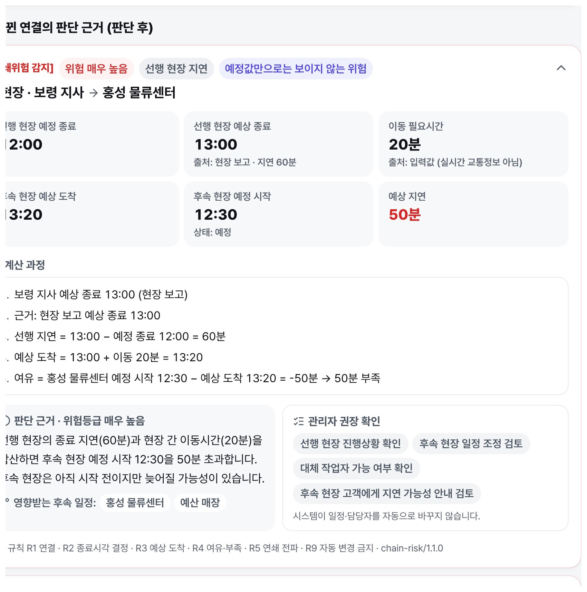
계산 과정 1~5단계가 화면에 그대로 보입니다 — 결과만이 아니라 근거를 함께 보여 줍니다.
실제 화면관리자 PC기술검증 화면 · 기존 검사와 비교
같은 시험 데이터 11개 — 기존 겹침 검사는 B · D에서 위험을 못 찾고(−), 연쇄위험 엔진은 A>B · B>C를 찾습니다. 잘못된 입력은 ‘판단 보류’로 따로 둡니다.


 1
1 12
12